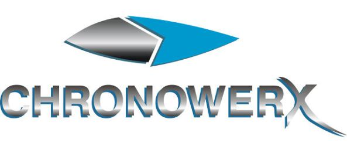

1 Gateway Plaza, Los Angeles, CA 90012
Chronowerx Industries is a 20th century computer technology company founded by Henry Starling and headquartered in Los Angeles, California, on Earth. Chronowerx is largely responsible for the computer age of the 20th century, due to regular technological innovations introduced by Starling since 1969, when he introduced the first isograted circuit. Unknown to anyone at the time, Starling's technological breakthroughs were based on his primitive understanding of the technology aboard the 29th century timeship Aeon, which Starling found after it crashed in 1967. Even the company's logo is a slightly modified version of the Starfleet insignia of the 29th century.
In 1996, Chronowerx was set to release the HyperPro PC. That same year, Henry Starling planned to travel to the 29th century with the Aeon to retrieve more technology with which to continue the predominance of Chronowerx in the technological field. Both Starling and the Aeon were destroyed by the USS Voyager before completing this goal, in order to prevent Starling from inadvertently causing a catastrophic temporal explosion in the future which would have destroyed all of Earth's solar system.